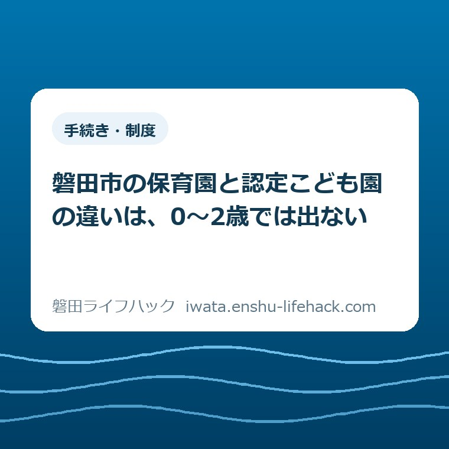

手続き・制度
磐田市の保育園と認定こども園の違いは、0〜2歳では出ない

この記事の要点
Q. 0〜2歳の子を預けたい。保育園と認定こども園、どちらを選べばいいですか？
A. 0〜2歳のあいだは、どちらも3号認定で、申込みも利用調整も保育料表も同じです。違いが出るのは3歳以降と、2歳で卒園になる地域型保育13園との間。園数は認定こども園21園、保育園13園です（2026年8月31日確認）。
導入——「どっちがいいですか」に、0〜2歳では答えが分かれない
磐田市には認定こども園が21園、保育園が13園あります（磐田市「認定こども園の紹介」「公立保育園」「私立保育園」、いずれもページ更新日2026年6月11日。園名を当方が数え上げ、2026年8月31日確認）。数だけ見ると、こども園のほうが保育園より8園多いことになります。
来年度の入園を考えて磐田市のページを開くと、この二つが並んで出てきます。名前が違い、根拠になる法律も違うので、どちらを選ぶかで何かが大きく変わるように見えます。0〜2歳の子を預けたいご家庭から「結局どっちがいいんですか」と聞かれることがあります。
先に答えを書きます。0歳から2歳のあいだは、保育園と認定こども園で違うところがほとんどありません。必要な認定は同じ3号認定、申込みの窓口も同じ、利用調整の考え方も同じ、保育料も同じ「令和8年度 磐田市保育料表」で決まります。
私は磐田市で不動産業をしている大石浩之（磐田市／不動産業）です。保育の専門家ではありません。住まいを探すご家族と一緒に地図を広げて「この家からどの園まで何分か」を見る、という距離感で保育の話に触れています。この記事は、磐田市が公表している資料を、園を選ぶ側の順番に組み直したものです。
先に断っておきます。保育の必要性の認定も入園の可否も、世帯の就労時間、きょうだいの有無、住んでいる地区で結論が変わります。この記事に書けるのは磐田市が公表している共通の枠組みまでで、ご自身の家庭がどうなるかは、最後に磐田市の公式ページかこども園課の窓口で確かめてください。
それでも一つ言い切っておきます。0〜2歳の入園で本当に効いてくる違いは、保育園と認定こども園の間にはありません。その二つと、地域型保育13園との間にあります。

まず、公式資料から事実を整理する——磐田市の園は何が、いくつあるか
磐田市で就学前の子どもが通える認可施設は、大きく四種類あります。幼稚園、保育園、認定こども園、そして地域型保育（小規模保育所と事業所内保育所）です。2026年8月31日時点で磐田市が公表している園名を数えると、次のようになります。
認定こども園は公立10園・私立11園の合計21園です。磐田市は認定こども園を「教育と保育を一体的に行う施設です。幼稚園と保育園の両方の機能を持つ施設です」と説明しています（磐田市「認定こども園の紹介」、ページ更新日2026年6月11日）。内訳は幼稚園型と幼保連携型に分かれます。
保育園は公立2園（磐田北保育園・豊田西保育園）と私立11園の合計13園です。磐田市は保育園を「就労や病気などの理由により、家庭での保育ができない保護者にかわって保育する施設です」と説明しています（磐田市「公立保育園」、ページ更新日2026年6月11日）。公立保育園の開所時間は平日が午前7時15分から午後6時30分まで、土曜が午前7時15分から午後6時までです。
幼稚園は公立6園・私立2園の合計8園です。こちらは磐田市の「幼稚園の紹介」に園数がそのまま書かれています。認定こども園21園と並べると、単独の幼稚園はすでに少数派です。
地域型保育は、小規模保育所11園と事業所内保育所2園の合計13園です。小規模保育所について磐田市は「0歳児～2歳児を、定員が6人～19人以下の小規模な施設で保育する保育事業です」と書いています（ページ更新日2026年1月5日）。事業所内保育所も0〜2歳児が対象で、磐田市内では2園です。
ここで一度、数を足しておきます。0〜2歳の子が通える可能性のある施設は、保育園13園と認定こども園21園と地域型保育13園で47園。このうち13園、割合にして約28%は、2歳の年度末で卒園になります（当方の計算）。
園の構成は動いている最中です。令和8年4月には磐田北幼稚園と磐田南幼稚園が認定こども園になり、豊田北部幼稚園は2026年3月31日で閉園しました。令和8年4月入園の募集案内（ページ更新日2025年11月10日）では対象施設が認定こども園20園・保育園14園と書かれていましたから、この1年で1園が保育園側からこども園側へ移った勘定になります（当方の読み比べ）。
1号・2号・3号——違いは建物の名前ではなく、認定の番号にある
磐田市の入園案内は、施設の種類ではなく認定の番号で整理されています。「令和8年度 磐田市保育園等入園案内」（磐田市、第1版）は「保育園等を利用するには、２号又は３号の教育・保育給付の認定申請及び入園申込みが必要です」と書いています。
1号認定は、満3歳から小学校就学前までが対象です。保護者の就労などの条件は特にありません。通えるのは幼稚園と、認定こども園の幼稚園枠です。
2号認定も、満3歳から小学校就学前までが対象です。ただし保育を必要とする事由に該当し、家庭で保育できない場合に限られます。通えるのは保育園と、認定こども園の保育園枠です。
3号認定は0歳から2歳までが対象で、条件は2号と同じです。通えるのは保育園、認定こども園の保育園枠、そして地域型保育です。
この三つを並べ直すと、0〜2歳の子には1号も2号も存在しません。3号しかありません。だから「保育園にするか認定こども園にするか」という問いは、0〜2歳の段階では「3号認定で通える47園のうち、どこを第一希望に書くか」という問いに置き換わります。施設の種類を先に決めても、手続きの中身は一つも変わりません。
保育を必要とする事由は8種類あり、就労の場合は月64時間以上が目安になります。認定される保育時間は、上限11時間の保育標準時間か、上限8時間の保育短時間の二つです。この区分は施設の種類では決まらず、保護者の就労状況で決まります。同じ園に通う子でも、標準時間の子と短時間の子が混在します。

0〜2歳で本当に違うのは、地域型保育13園との間
0〜2歳の入園で結論が変わる違いは、卒園の年齢です。保育園と認定こども園は就学前まで通えます。地域型保育の13園は0歳児から2歳児までが対象なので、2歳児クラスを終えたら次の預け先を探すことになります。
磐田市は小規模保育所のページに「（卒園後の受け入れ先として連携施設を設定している園もあります。）」と書いています。「園もあります」であって、全園ではありません。連携施設があるかどうかは園ごとに違い、一覧ページからは読み取れません。
定員の規模も違います。小規模保育所の定員は6人から19人です。0歳の子を初めて預けるご家庭にとって、少人数であることは安心材料にもなります。その代わり、3歳になる年にもう一度、入園の手続きを踏むことになります。
私が住まいの相談で見ている限り、この「3歳でもう一度」の部分が視野から外れたまま第一希望を決めているご家庭は珍しくありません。0歳で入れたことに安心して、2年後の書類の話が後ろに回る。責める話ではなく、0歳児を抱えた状態で2年先の手続きを考えるほうに無理があります。ここは私の見立てで、磐田市が調べて公表しているものではありません。
第一希望を書く前に、その園が地域型保育かどうかだけは確認しておくと、後で効きます。園ごとの入口は、当サイトの磐田市の保育園と一時預かりを整理したページにまとめてあります。
3歳から先で、違いがはっきり出る——入り方が「指数」と「抽選」に分かれる
3歳になると、保育園と認定こども園の差がはっきりします。認定こども園には1号認定の枠（幼稚園枠）があり、保育園にはありません。
仕事を辞めた、下の子の育休に入った、勤務時間が月64時間を下回った。こうした変化が起きると、2号認定の要件から外れます。認定こども園なら1号認定に切り替えて同じ園に通い続けられる可能性がありますが、保育園にはその受け皿がありません。
ここが、この記事でいちばん書いておきたいところです。0〜2歳の時点では同じに見える二つの施設が、3年後の家庭の変化に対して違う耐性を持っている。今日の書類が同じだからといって、3年分が同じではありません。
入園の決まり方も違います。2号・3号認定の入園について、磐田市は「世帯の状況や保育を必要とする理由などを考慮し、必要性の高い方からの入園となります。申込み者が多数の場合、入園できないことがあります」と書いています（磐田市「令和8年4月入園の保育園等入園申込み」、ページ更新日2025年11月10日）。利用調整指数表による順位づけです。
一方、公立幼稚園と公立認定こども園の幼稚園枠（1号認定）は「申込者が募集人数を超えた場合は抽選となります」と明記されています（磐田市「令和8年4月入園の公立幼稚園・公立認定こども園(幼稚園枠)入園申込み」、ページ更新日2025年11月10日）。同じ認定こども園の建物でも、入り方が指数の積み上げか、くじ引きかで分かれます。
抽選に外れた場合は他の幼稚園・認定こども園に申し込めることも、磐田市は書いています。1号認定は通園区が自由で、磐田市は「平成29年度から通園区を自由化しました。市内全域の幼稚園・認定こども園から選択できます」としています。3歳以降の選び方は、当サイトの磐田市の幼稚園・保育園・こども園の入園を整理したページのほうが近い話になります。
認定こども園の預かり保育も見ておく値打ちがあります。公立幼稚園・公立認定こども園（幼稚園枠）の預かり保育は、教育時間の終了後から午後4時30分まで、長期休業中は午前8時30分から午後4時30分までです。料金は1日450円で、おやつ代が1日50円、長期休業中の給食費が1日200円かかります。
お金の話——保育料表は同じで、無償化の線も同じ
0〜2歳の保育料は、保育園でも認定こども園でも同じ「令和8年度 磐田市保育料表」で決まります。第1階層から第8階層まで、世帯の市民税額で階層が分かれる形です。
0〜2歳児クラスの月額は、保育標準時間で0円から60,800円、保育短時間で0円から59,200円です（磐田市「令和8年度 磐田市保育料表」）。園の名前でも施設の種類でもなく、世帯の市民税額と認定された保育時間だけで決まります。多子軽減の仕組みも共通です。
無償化の線も共通です。磐田市は「幼児教育・保育の無償化の実施に伴い、０から２歳児クラスまでの市民税非課税世帯と３から５歳児クラスまでの保育料は無料となります」と書いています。3歳の誕生日ではなく、クラスの年齢で切り替わります。
数字を自分の商売の感覚に置き換えます。最上階層の60,800円を12か月分で計算すると年729,600円。0歳から2歳まで3年通えば約219万円です（当方の計算。階層は毎年の市民税額で変わるので、実際に払う額とは違います）。
私は不動産の仕事をしているので、月6万円という数字を家賃で考えます。磐田市内でファミリー向けの賃貸を1戸借りられる水準です。それが3歳児クラスに上がった月に0円になる。家計の折れ線で見ると、3歳という線はかなり急な段差です。これは私の商売感覚での比較で、磐田市が示している比較ではありません。
3歳以降に1号認定で通う場合は、費用の形が変わります。保育料そのものは無償で、預かり保育を使った分だけ1日450円・月11,300円を上限に無償になる仕組みです。この無償化を受けるには施設等利用給付認定が要ります。世帯の収入が同じでも、2号で通うか1号＋預かり保育で通うかで手取りの負担は変わります。
手当の側と合わせて家計を組むなら、磐田市の児童手当を月額で整理した記事と並べて見ると、就学前から高校生年代までの入りと出が一枚でつながります。
令和8年9月入園、調整中児童数157人の読み方
磐田市は「保育園等の申込み・募集状況の公表」というページで、月ごとの入園調整中児童数を公表しています。令和8年9月入園の調整中児童数は157人で、内訳は0歳児94人、1歳児35人、2歳児20人、3歳児3人、4歳児1人、5歳児4人です（磐田市、ページ更新日2026年8月10日、2026年8月31日確認）。
157人のうち0歳児が94人。割合にすると約60%です（当方の計算）。1歳児35人を足すと129人になり、全体の約82%が0歳児と1歳児で占められています。3歳児から5歳児は合わせて8人しかいません。
この数字には注記が付いています。磐田市は「※調整中児童数は、第一希望園により算出していますので、第二希望以下の申込者数は含まれていません」と書いています。157人は「どこにも入れない人の数」ではなく「第一希望園に入れていない人の数」です。国の基準による待機児童数とも定義が違いますし、磐田市は「待機児童数」という名前ではこの数字を出していません。
一覧は市内の47園と市外の保育園を合わせた48欄で組まれています。157人を市内47園で単純に割ると1園あたり約3.3人（当方の計算）。ただし実際は特定の園に偏っていて、0人の園と二桁の園が同じ表に並びます。平均値を見ても、自分が書こうとしている園の状況は分かりません。
このページには次の更新予定まで書いてあります。次回の更新予定は令和8年9月8日午後6時。希望園の変更期間も月ごとに決まっていて、令和8年11月入園分は2026年9月8日から11日までです。更新された数字を見てから希望園を変えられる並びになっています。
評価——良い点と、注文したい点
良い点は三つあります。①調整中児童数を月ごとに、園別・年齢別で公表していること。②「第一希望園により算出」という注記を付けて、その数字で言えないことを明示していること。③次回更新の日時まで先に書いていること。
特に②を評価しています。この一行が無ければ、157人という数字は待機児童数として読まれ、そのまま引用されていきます。数字を出すときに、その数字で言えない範囲を併記する。行政の公表資料でこれをやっている例は、私が見ている範囲ではそう多くありません。
③も実務的です。次回は9月8日午後6時と書いてあるので、保護者は毎日ページを開かなくて済みます。希望園の変更期間が同じ9月8日から11日なので、更新された数字を見てから変更を判断できます。ここは間違いなく、使う側の手順を考えて作られています。
その上で、注文したい点も二つあります。①一覧から施設の種類が読み取りにくいことです。0〜2歳の保護者にとって、その園が地域型保育かどうかは卒園年齢を左右します。園名の横に「2歳まで」と一行あるだけで、第一希望の書き方が変わるご家庭があるはずです。
②園数の総数がページに書かれていないことです。幼稚園のページには「公立幼稚園（6園）」「私立幼稚園（2園）」と園数が明記されているのに、認定こども園と保育園のページは園名の列挙だけで終わっています。この記事の21園・13園も、当方が数え上げた数字です。市が総数を書いていないので、こちらで数えるしかありませんでした。
どちらも一事業者としての要望であり、担当課の仕事を否定するものではありません。月ごとに園別・年齢別の数字を出し続ける手間は、外から見ているより大きいはずです。私の商売で同じ頻度の一覧を作れと言われたら、正直かなり苦しい。
対案・結論——0〜2歳の保護者が、この9月にやっておくこと
令和9年4月入園の案内は、2026年8月31日時点でまだ公表されていません。磐田市は新年度（4月入園）の園児募集について「9月下旬頃にホームページ等でご案内します」としています。
令和8年度の実績を目安にすると、一次募集が2025年10月1日から10月31日、二次募集が2025年11月4日から2026年1月30日でした。結果通知は1月末と2月末です。同じ形なら、動き出すのは9月下旬です。
年度途中の入園は別の段取りになります。磐田市は「入園希望月の3か月前に入園申込みに必要な書類をご提出ください。入園希望月ごとに受付期間があります。期間外の受付はできませんので、ご注意ください」と書いています。育休の復帰月が決まっているご家庭は、逆算する起点がここです。
今日できることは一つでいいと思っています。第一希望に書こうとしている園が、保育園・認定こども園・地域型保育のどれなのかを確認しておく。それだけで、3歳でもう一度手続きが要るかどうかが分かります。
決めるのは9月下旬でかまいません。今日結論を出す必要はありません。ただ、園の種類と卒園年齢だけは先に手元に置いておくと、どの選択をするにしても半年後に効いてきます。
確認する順番
- 気になっている園の名前を3つ書き出し、それぞれが保育園・認定こども園・地域型保育のどれかを磐田市の紹介ページで確認する。
- 地域型保育が含まれていたら、卒園後の連携施設があるかをこども園課に電話で聞く。ページには「設定している園もあります」としか書かれていない。
- 保護者それぞれの1か月の就労時間を数え、月64時間以上か、保育標準時間（上限11時間）と保育短時間（上限8時間）のどちらに当たるかを見る。
- 令和8年度 磐田市保育料表で、世帯の市民税額から自分の階層と0〜2歳児クラスの月額を確認する。0〜2歳児クラスは市民税非課税世帯なら無償。
- 「保育園等の申込み・募集状況の公表」で、希望する園の年齢別の調整中児童数を見る。次回更新は令和8年9月8日午後6時。
- 9月下旬に令和9年4月入園の案内が出たら、一次募集の受付期間を家族の予定表に先に書き込む。年度途中入園なら希望月の3か月前を起点にする。
家族で共有するための記録
保育の話は、申込みの書類を書く人と、毎日迎えに行く人が違うことがよくあります。書き出して共有しておくと早いのは、次の項目です。
第一希望の園名。その園の種類（保育園・認定こども園・地域型保育）。卒園の年齢。認定される保育時間が標準時間か短時間か。保護者それぞれの1か月の就労時間。世帯の市民税の階層と保育料の月額。年度途中入園なら、希望月の3か月前に当たる受付期間。
この中で後から効くのは「その園の種類」です。3年後に同じ手続きをもう一度することになるかどうかが、ここで決まります。就学後の預け先まで見通すなら、磐田市の放課後児童クラブを整理したページもいずれ通る道になります。
大石の視点
ここから先は、私が住まいの相談の現場で見てきたことをもとにした見解です。特定のご家庭の体験談ではなく、不動産の相談を受けている人間の意見として読んでください。
認定こども園21園に対して保育園13園という比率を見て、私が最初に思ったのは「入り口を一本化しに来ている」ということです。令和8年4月には磐田北幼稚園と磐田南幼稚園がこども園になり、豊田北部幼稚園は2026年3月31日で閉園しました。幼稚園も保育園も、こども園へ寄っていく流れが園数に出ています。
家を買う側から見ると、この流れには意味があります。幼稚園と保育園が別々だと、住まいを決めるときに「今は保育園、3年後は幼稚園」と二段構えで地図を見ることになる。こども園なら一つの園で就学前まで通えるので、住まいの検討が一回で済みます。通学区の話に進むのも早くなります。
一方で、こども園化が進んでも、0〜2歳の枠が同じだけ増えるとは限りません。調整中児童数157人のうち94人が0歳児という偏りは、施設の種類の再編とは別の話です。看板が幼稚園からこども園に変わっても、0歳児1人を見るために必要な保育士の人数は変わりません。増えるのは選択肢であって、必ずしも定員ではない。
私がまだ答えを持っていないのは、この0歳児94人という数字をどう読むかです。育休を早く切り上げないと入れないから0歳で申し込む、という順番になっているのか。それとも0歳から預けたいご家庭がそれだけあるのか。磐田市の公表資料からは、この二つを区別できません。
順番が前者なら、増やすべきは0歳児の枠ではなく、育休を1年取っても1歳児で入れる見込みのほうです。後者なら0歳児の枠そのものです。どちらに手を打つかで、必要な保育士の数も配置も変わります。私は磐田市の公表資料を読んだ範囲では、まだ判断がついていません。数年ぶんの月別の数字を並べてから、あらためて書きます。
まとめ
磐田市の保育園と認定こども園は、0〜2歳の入園手続きの上ではほぼ同じものです。同じ3号認定、同じ申込み、同じ利用調整、同じ保育料表。違いが出るのは3歳の入り口と、2歳で卒園になる地域型保育13園との間です。
この記事の数字は、すべて磐田市が公表しているものか、そこから当方が数え上げ・計算したものです。どちらであるかは本文中に書き分けました。ご自身の家庭がどの認定に当たり、どの園に入れるかは、必ず磐田市の公式ページかこども園課で確認してください。
- 磐田市の認定こども園は21園、保育園は13園、幼稚園は8園、地域型保育は13園（園名の数え上げ、2026年8月31日確認）
- 0〜2歳は3号認定のみ。保育園・認定こども園（保育園枠）・地域型保育の47園が対象で、申込みも保育料表も共通
- 地域型保育13園は2歳の年度末で卒園。連携施設は「設定している園もあります」で全園ではない
- 3歳で分かれる。認定こども園には1号枠があり、仕事を辞めても通い続けられる可能性がある
- 2号・3号は利用調整指数、公立幼稚園と幼稚園枠は募集人数超過で抽選。入り方が違う
- 0〜2歳児クラスの保育料は月0円〜60,800円（標準時間）。3〜5歳児クラスは全員無償
- 令和8年9月入園の調整中児童数157人のうち0歳児94人（約60%）。第一希望園のみで算出した数字で、待機児童数ではない
- 令和9年4月入園の案内は9月下旬頃に公表予定。次回の調整中児童数の更新は令和8年9月8日午後6時
よくある質問
磐田市では、0歳児の入園で保育園と認定こども園のどちらが有利ですか。
0歳から2歳のあいだは、保育園も認定こども園の保育園枠も、必要な認定は同じ3号認定です。磐田市の入園申込みの窓口も、利用調整の考え方も、令和8年度磐田市保育料表も共通で、施設の種類そのものによる有利不利はありません。入園の可否は世帯の状況と保育を必要とする理由による利用調整で決まります。園数は認定こども園21園、保育園13園です（磐田市の公表ページの園名を当方が数え上げ、2026年8月31日確認）。
磐田市の小規模保育所に0歳で入ったら、3歳になったときはどうなりますか。
磐田市の小規模保育所11園と事業所内保育所2園は0歳児から2歳児までが対象です。2歳児クラスを終えると次の預け先を探すことになります。磐田市は小規模保育所について「卒園後の受け入れ先として連携施設を設定している園もあります」と書いており、全園に連携施設があるわけではありません。第一希望を書く前に、その園が地域型保育かどうかと、連携施設の有無をこども園課で確認してください。
磐田市の令和9年4月入園の申込みは、いつから受け付けますか。
2026年8月31日時点で令和9年4月入園の案内はまだ公表されていません。磐田市は新年度の園児募集について「9月下旬頃にホームページ等でご案内します」としています。令和8年4月入園では一次募集が2025年10月1日から10月31日、二次募集が2025年11月4日から2026年1月30日、結果通知が1月末と2月末でした。年度途中の入園は入園希望月の3か月前が受付期間で、期間外は受け付けられません。
参考にした公式情報
- 保育園等の申込み・募集状況の公表／磐田市（2026年8月31日確認・ページ更新日2026年8月10日）
- 保育園等の入園申込み／磐田市（2026年8月31日確認・ページ更新日2026年4月8日）
- 令和8年4月入園の保育園等入園申込み／磐田市（2026年8月31日確認・ページ更新日2025年11月10日）
- 認定こども園の紹介／磐田市（2026年8月31日確認・ページ更新日2026年6月11日）
- 公立保育園／磐田市（2026年8月31日確認・ページ更新日2026年6月11日）
- 私立保育園／磐田市（2026年8月31日確認・ページ更新日2026年6月11日）
- 小規模保育所／磐田市（2026年8月31日確認・ページ更新日2026年1月5日）
- 事業所内保育所／磐田市（2026年8月31日確認・ページ更新日2025年11月6日）
- 幼稚園の紹介／磐田市（2026年8月31日確認・ページ更新日2026年6月11日）
- 令和8年4月入園の公立幼稚園・公立認定こども園(幼稚園枠)入園申込み／磐田市（2026年8月31日確認・ページ更新日2025年11月10日）
- 公立幼稚園・公立認定こども園（幼稚園枠）の預かり保育事業／磐田市（2026年8月31日確認・ページ更新日2025年9月18日）
- 幼児教育・保育無償化／磐田市（2026年8月31日確認・ページ更新日2026年6月3日）
最終確認日：2026-08-31 ／ 本記事は公表情報と執筆者の見解を分けて記載しています。制度・数値・公開状況は変更される場合があるため、最新情報は磐田市公式ページでご確認ください。